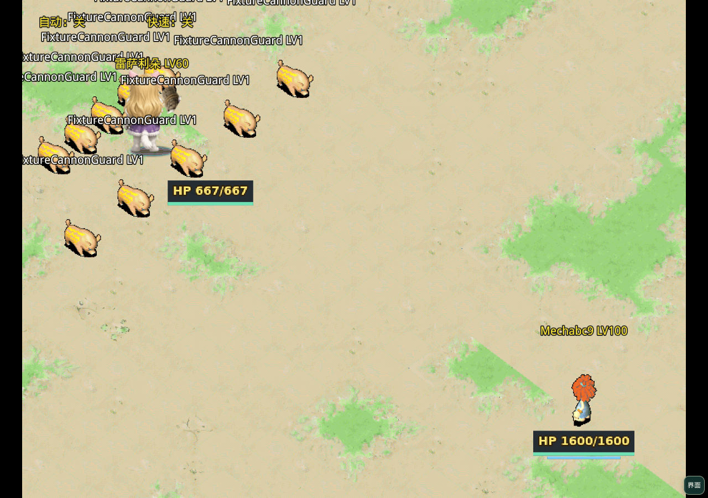
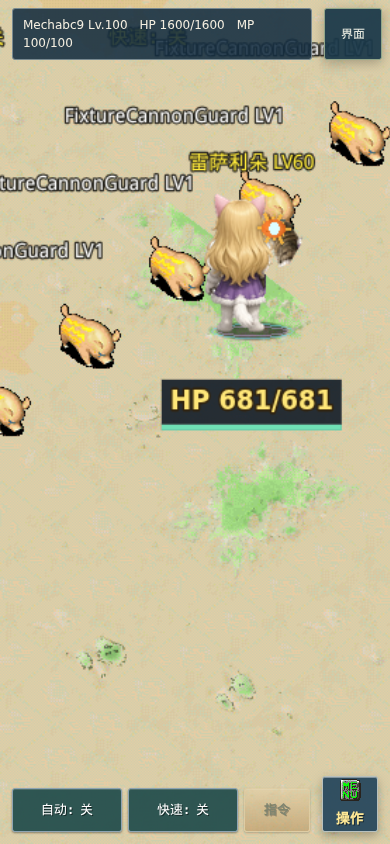
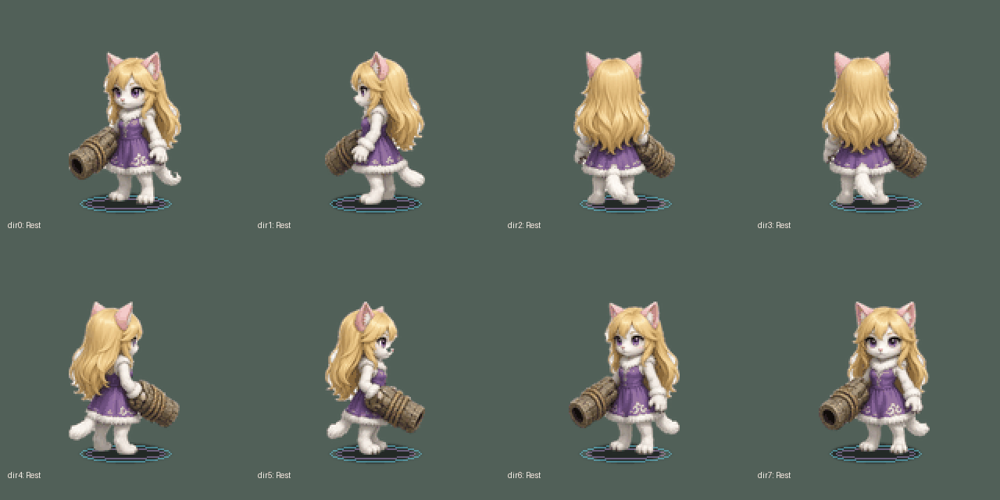
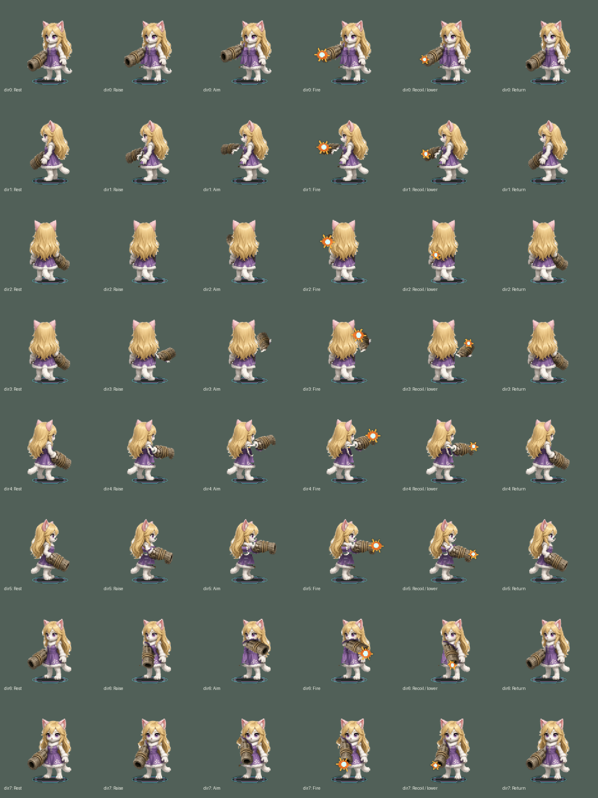

以下是生产生成器输出的合成预览，非实际运行截图。完整分解包含预备、抬臂、瞄准、开炮、收势与回位。


匹配最终Linux程序和真实素材，以原生UI / GM请求触发；只读采样实际服务端事件和渲染帧。
完整验收与限制 · 浏览器证据 · 素材合同 · 升级案例 · 官方方法资料
图包：lisarido-v3-assets.tar.gz · 2,435,124 bytes420b024dddea2d6c9f0dd8f530cb19dd9e2f64c0394df639d6ef24bf8c798750